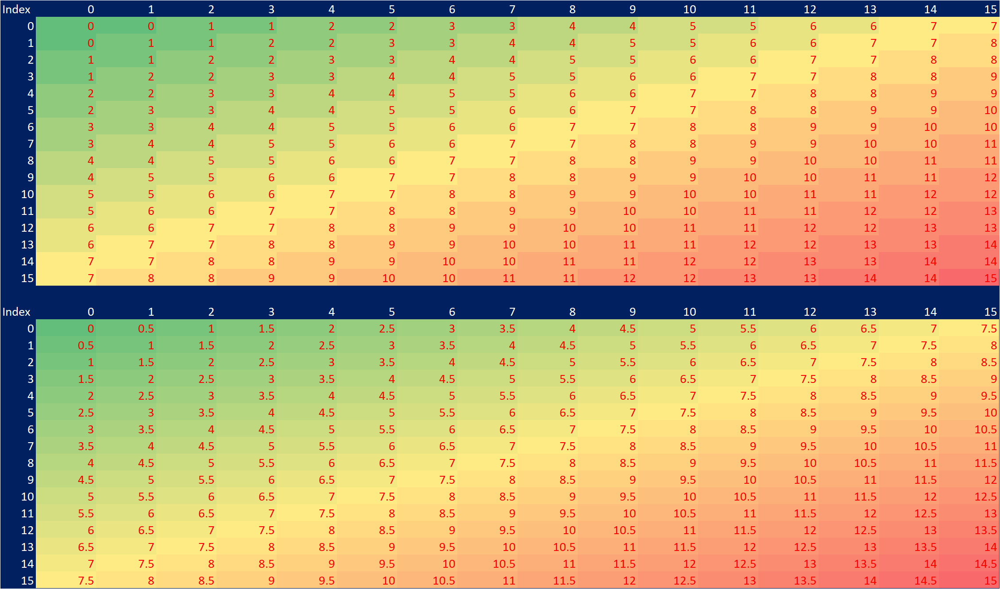

How many steps perform a linear search for the number 8 in the ordered array [2, 4, 6, 8, 10, 12, 13]?
1.2 Written Answer
Count up from index 0 through array to find the target.
It’s the 3rd index, or 4th item, therefore 4 steps.
1.3 Python Answer
def calc_linear_search_n_steps(input_arr, target):print(rf"LinearSearch() began on array: {input_arr}") counter =0for i,v inenumerate(input_arr): counter +=1if input_arr[i] == target:print(rf"Target found [{target}]: [{counter}] steps")return counterprint(rf"Target not found in [{input_arr}]")returnFalselinear_search_n_steps = calc_linear_search_n_steps([2, 4, 6, 8, 10, 12, 13], 8)
LinearSearch() began on array: [2, 4, 6, 8, 10, 12, 13]
Target found [8]: [4] steps
2.1 \(BinarySearch()\): n_steps of orderd_array:
How many steps would binary search take for the previous example?
2.2 Written Answer
Choose middle index and compare against target, here it is 1 step.
2.3 Python Answer
def calc_binary_search_n_steps(input_arr, target):print(rf"BinarySearch() began on array: {input_arr}") l,r =0, len(input_arr)-1# set left, right index bounds counter =0while l<=r: counter+=1 m=(l+r)//2# middle-indexif input_arr[m] == target:print(rf"Target found [{target}]: [{counter}] steps")return counterelif input_arr[m] < target: l=m+1elif input_arr[m] > target: r=m-1print(rf"Target not found in [{input_arr}]")returnFalsecalc_binary_search_n_steps([2, 4, 6, 8, 10, 12, 13], 8)
BinarySearch() began on array: [2, 4, 6, 8, 10, 12, 13]
Target found [8]: [1] steps
1
2.4 Middle Index: m - Some Comments
I did not fully understand how the middle-index m is calculated despite it looking simple:
m=(l+r)//2
2.5 Middle-Index m Table
So, I created a table showing: * left and right-indices (like the algorithm) * middle-index calculation before rounding down * middle-index calculation after rounding down
I didnt have any intuition on how it increments, so for me it’s fascinating and surprising that it increments by 2 each time…. Some math thing going on which I dont understand but at least I know how it works a bit more after this table
Top Table: Calculates m with rounding down (as in algorithm):
m = (l+r)//2
i.e. the middle index chosen to compare against the target
Bottom Table: Calculates m with no rounding:
m = (l+r)/2
Notice the pre-rounded value increments is by 0.5
And we dont have non-integer indexing so this forces us to round up or down,
So by rounding down, we see m goes up every 2 indices, pretty cool and also makes sense.

3.1 \(BinarySearch()\): max_n_steps of orderd_array:
What is the maximum number of steps it would take to perform a binary search on an array of size 100,000?
3.2 Written Answer
A characteristic of the \(BinarySearch()\) is that:
The number of items (array_size) searchabledoubles at each \(step\):
can be described by an exponential function
with base of 2
where n is the number of steps:
Defined as: \[array\_size = 2^n\]
That is, the questions is asking: \[100,000 = 2^n\]\[\log(100,000) = \log(2^n)\]\[\log(100,000) = n\log(2)\]\[\frac{\log(100,000)}{\log(2)} = n\]\[n=\frac{\log(100,000)}{\log(2)}\]\[n=16.610\ steps(3\ d.p)\]